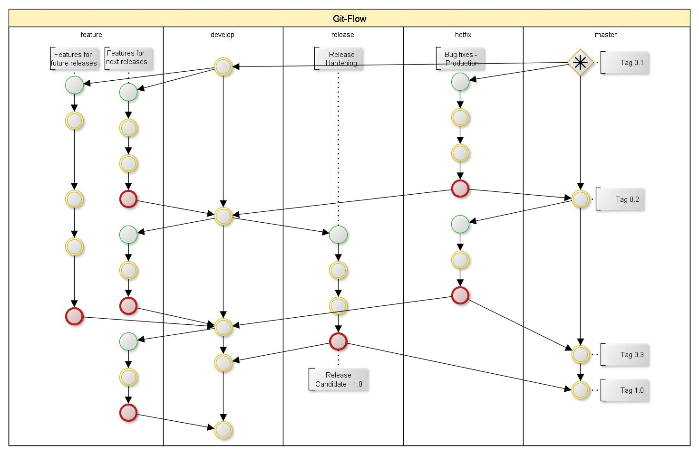

CI with HTML5
Why bother?
Craig Simpson / @_craigmr / github.com/craigmr
Atlanta Code Camp 2013 - 8/24/2013
About
Front end developer for 7 years.
AT&T messages.att.net
Why bother doing this for HTML5?
“It's just static files“
“Too much work“
“Throw the files up on FTP/through WAR“
“Other frameworks handle it for me“
Continuous
Integration?
source control (git/svn/cvs)
unit tests
build tools
artifacts
automation
“From local workspace to a live environment in one click/command“
Source Control
Mainline Integrity
Merge!
Git Flow
Let's See Some Code!
credit
Since When?
Using Local Store as "Backend"

Unit Testing JS
Libraries
Cases/Tests/Setup/Tear Downs/Asserts


Problem!
JS needs to run in the browser
Doesn't really work for automation :(
Runner
Karma JS
Build Tools
- Compile SASS -> CSS
- Concat JS/CSS
- Minify JS/CSS
- Generate Sprite Sheets
- Create Zip
Tips
Easy to setup
Write scripts in development language

Grunt.js